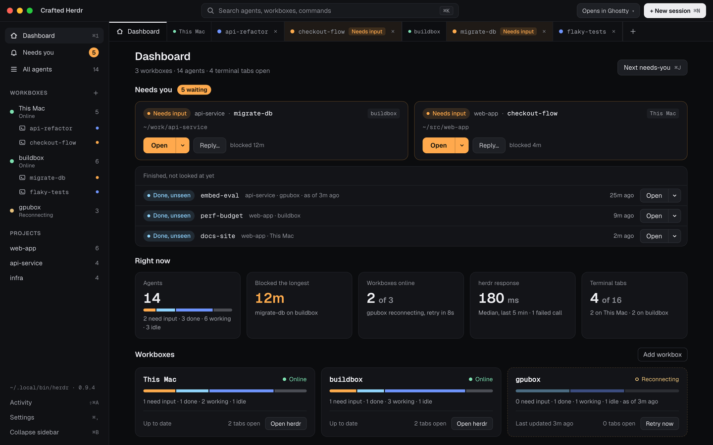
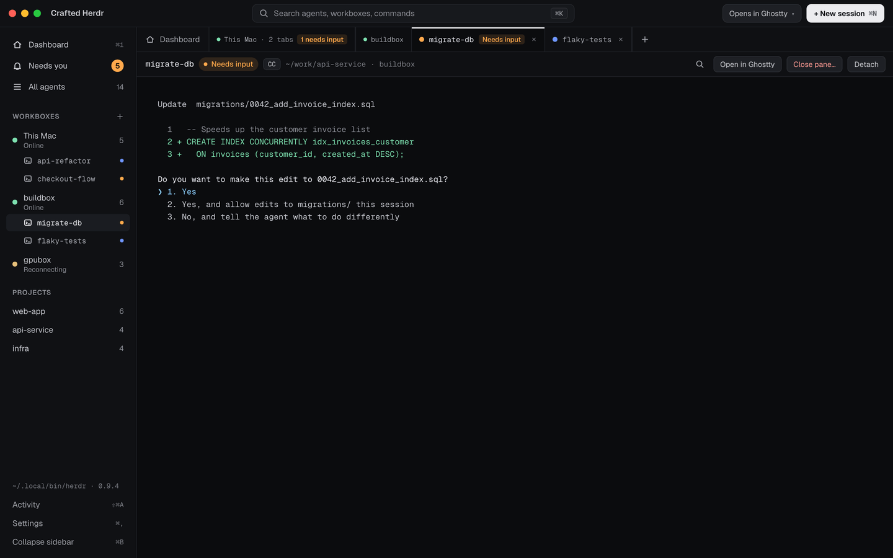

Open source · for macOS · MIT
A desktop home for your herdr agents.
Every workbox, every agent, grouped by project — with what needs you first. Crafted Herdr runs your own herdr CLI and opens any pane in the terminal you already use.
brew install --cask valencar/tap/crafted-herdr

What it does
Built for the moment an agent needs you.
-
01
Who needs you, first.
Blocked and finished agents sit at the top of the Dashboard, oldest first. ⌘J jumps straight to the next one.
-
02
Terminals, in tabs.
Attach any pane in a tab inside the app, or in Ghostty, iTerm2, Warp, WezTerm, Kitty, Alacritty or Terminal. Closing a tab only detaches — the agent keeps running.
-
03
Every workbox, one window.
Local and remote machines side by side, with their health in words, a status bar and a one-click reconnect.
-
04
Menu bar and notifications.
A tray count and a compact “Needs you” popover, plus a notification the moment an agent blocks or finishes.

Keyboard-first
Hands stay on the keys.
The native menu bar owns every shortcut, so they work even while a terminal has the keyboard.
- ⌘K
- Command palette
- ⌘J
- Next agent that needs you
- ⌘\
- Dashboard beside terminal
- ⌘1
- Dashboard
- ⌃`
- Last terminal tab
- ⇧⌘A
- Activity drawer
Fork it
Don’t like something? Fork it.
MIT licensed. Tauri 2, a Rust core and a React UI. Change what you want, and send it back if you like.
$ gh repo fork valencar/crafted-herdr-ui --clone $ cd crafted-herdr-ui $ pnpm install $ pnpm tauri dev
Needs macOS 13+, Node 24+, pnpm 10 and a stable Rust toolchain.
Before first launch
Builds aren’t notarized yet.
macOS blocks the first launch. On macOS 15 and later, try to open the app once, then choose Open Anyway in System Settings › Privacy & Security. Or clear the quarantine flag once:
$ xattr -dr com.apple.quarantine "/Applications/Crafted Herdr.app"
Herd them all.
Free and open source, for macOS 13 and later.
Unofficial community project · not affiliated with herdr.dev